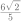

시험대비 · 2026학년도 2학기 중간고사 · 중3 · 원과직선
이름
001
그림과 같이 두 원  ,
,  은 각각 두 사각형
은 각각 두 사각형  , 에 내접한다. , , , 일 때, 의 값은?
, 에 내접한다. , , , 일 때, 의 값은?
002
그림과 같이 원의 두 현  ,
,  는 점
는 점  에서 서로 수직으로 만난다. , , 일 때, 이 원의 넓이는?
에서 서로 수직으로 만난다. , , 일 때, 이 원의 넓이는?
시험대비 · 2026학년도 2학기 중간고사 · 중3 · 원과직선
이름
그림과 같이 두 원 , 은 각각 두 사각형 , 에 내접한다. , , , 일 때, 의 값은?


그림과 같이 원의 두 현 , 는 점 에서 서로 수직으로 만난다. , , 일 때, 이 원의 넓이는?
시험대비 · 2026학년도 2학기 중간고사 · 중3 · 원과직선
그림과 같이 원  의 세 현
의 세 현  ,
,  , 는 서로 평행하고, 이웃한 두 현 사이의 거리가 같다.
, 는 서로 평행하고, 이웃한 두 현 사이의 거리가 같다.  cm, cm, cm일 때, 원
cm, cm, cm일 때, 원  의 둘레의 길이를 구하시오.
의 둘레의 길이를 구하시오.
그림과 같이 점  를 중심으로 하는 두 원
를 중심으로 하는 두 원  ,
,  가 있다. 원
가 있다. 원  의 두 현
의 두 현  ,
,  에 대하여 현
에 대하여 현  는 원
는 원  에 접하고 이다. 두 원 , 의 반지름의 길이가 각각 8, 6일 때, 선분
에 접하고 이다. 두 원 , 의 반지름의 길이가 각각 8, 6일 때, 선분  의 길이를 구하시오.
의 길이를 구하시오.
시험대비 · 2026학년도 2학기 중간고사 · 중3 · 원과직선
그림과 같이 중심이  이고 반지름의 길이가 10인 원의 내부에
이고 반지름의 길이가 10인 원의 내부에  인 점
인 점  가 있다. 점
가 있다. 점  를 지나고 길이가 정수인 이 원의 현의 개수는?
를 지나고 길이가 정수인 이 원의 현의 개수는?


그림과 같이 원의 두 현 ,  에 대하여 점
에 대하여 점  에서 현
에서 현  에 내린 수선의 발을
에 내린 수선의 발을  라 하자. 원의 반지름의 길이가 이고
라 하자. 원의 반지름의 길이가 이고  , , 일 때, 선분 의 길이는?
, , 일 때, 선분 의 길이는?

시험대비 · 2026학년도 2학기 중간고사 · 중3 · 원과직선
그림과 같이 점  에서 원
에서 원  의 두 현
의 두 현  ,
,  에 내린 수선의 발을 각각
에 내린 수선의 발을 각각  ,
,  라 하자. 원
라 하자. 원  의 반지름의 길이가 4이고
의 반지름의 길이가 4이고  , 일 때, 삼각형 의 넓이는?
, 일 때, 삼각형 의 넓이는?
그림과 같이 , 인 직사각형  의 내부에 점
의 내부에 점  를 중심으로 하고 선분
를 중심으로 하고 선분  를 반지름으로 하는 사분원이 있다. 점
를 반지름으로 하는 사분원이 있다. 점  에서 이 사분원에 그은 접선이 변
에서 이 사분원에 그은 접선이 변  와 만나는 점을
와 만나는 점을  라 할 때, 선분
라 할 때, 선분  의 길이는?
의 길이는?


시험대비 · 2026학년도 2학기 중간고사 · 중3 · 원과직선
그림과 같이 점  에서 서로 외접하는 두 원 ,
에서 서로 외접하는 두 원 ,  는 직선
는 직선  과 각각 두 점
과 각각 두 점  ,
,  에서 접한다. 두 원
에서 접한다. 두 원  ,
,  의 반지름의 길이가 각각 4, 1일 때, 삼각형
의 반지름의 길이가 각각 4, 1일 때, 삼각형  의 외접원의 반지름의 길이를 구하시오.
의 외접원의 반지름의 길이를 구하시오.
그림과 같이 원  는 ,
는 ,  인 직각삼각형
인 직각삼각형  에 내접한다. 원
에 내접한다. 원  의 반지름의 길이가 2일 때, 색칠한 부분의 넓이를 구하시오. (단, )
의 반지름의 길이가 2일 때, 색칠한 부분의 넓이를 구하시오. (단, )
시험대비 · 2026학년도 2학기 중간고사 · 중3 · 원과직선
그림과 같이 원  는 , ,
는 , ,  인 삼각형
인 삼각형  에 내접한다. 변
에 내접한다. 변  위의 점 와 변
위의 점 와 변  위의 점 에 대하여 선분 가 원
위의 점 에 대하여 선분 가 원  에 접할 때, 삼각형 의 둘레의 길이를 구하시오.
에 접할 때, 삼각형 의 둘레의 길이를 구하시오.
그림과 같이 원  는 ,
는 ,  인 직각이등변삼각형
인 직각이등변삼각형  에 내접한다. 원
에 내접한다. 원  가 세 변
가 세 변  ,
,  ,
,  와 접하는 점을 각각
와 접하는 점을 각각  ,
,  ,
,  라 할 때, 삼각형 의 넓이를 구하시오.
라 할 때, 삼각형 의 넓이를 구하시오.
시험대비 · 2026학년도 2학기 중간고사 · 중3 · 원과직선
그림과 같이 네 원  ,
,  , , 는 각각 네 삼각형 , , , 에 내접하고, 이웃한 두 원은 서로 접한다. , , 일 때, 육각형 의 둘레의 길이를 구하시오.
, , 는 각각 네 삼각형 , , , 에 내접하고, 이웃한 두 원은 서로 접한다. , , 일 때, 육각형 의 둘레의 길이를 구하시오.
그림과 같이 반지름의 길이가 4인 두 원  , 은 각각 직사각형
, 은 각각 직사각형  의 대각선
의 대각선  로 나뉜 두 삼각형 ,
로 나뉜 두 삼각형 ,  에 내접한다. 두 원
에 내접한다. 두 원  ,
,  이 대각선
이 대각선  와 접하는 점을 각각
와 접하는 점을 각각  , 라 하자. 직사각형 의 둘레의 길이가 56일 때, 사각형
, 라 하자. 직사각형 의 둘레의 길이가 56일 때, 사각형  의 넓이를 구하시오. (단,
의 넓이를 구하시오. (단,  )
)
시험대비 · 2026학년도 2학기 중간고사 · 중3 · 원과직선
그림과 같이 직사각형  의 변
의 변  위의 점
위의 점  에 대하여 두 원
에 대하여 두 원  ,
,  은 각각 사각형 와 삼각형 에 내접한다. 일 때, 두 원
은 각각 사각형 와 삼각형 에 내접한다. 일 때, 두 원  ,
,  의 넓이의 비를 가장 간단한 자연수의 비로 나타내시오.
의 넓이의 비를 가장 간단한 자연수의 비로 나타내시오.
그림과 같이 반지름의 길이가 6인 원  의 지름
의 지름  의 연장선과 현
의 연장선과 현  의 연장선이 만나는 점을
의 연장선이 만나는 점을  라 하자. , 일 때, 선분
라 하자. , 일 때, 선분  의 길이를 구하시오.
의 길이를 구하시오.
시험대비 · 2026학년도 2학기 중간고사 · 중3 · 원과직선
그림과 같이 서로 평행한 두 직선 ,  와 원
와 원  가 있다. 두 직선
가 있다. 두 직선  ,
,  가 원
가 원  와 만나서 생기는 두 현의 길이를 각각
와 만나서 생기는 두 현의 길이를 각각  ,
,  라 하자. 원
라 하자. 원  의 반지름의 길이가 2이고 두 직선
의 반지름의 길이가 2이고 두 직선  ,
,  사이의 거리가 2일 때, 의 최댓값을 구하시오. (단, 두 직선 ,
사이의 거리가 2일 때, 의 최댓값을 구하시오. (단, 두 직선 ,  는 각각 원
는 각각 원  와 서로 다른 두 점에서 만난다.)
와 서로 다른 두 점에서 만난다.)
그림과 같이 , , 인 삼각형  가 있다. 각
가 있다. 각  의 이등분선이 변
의 이등분선이 변  와 만나는 점을
와 만나는 점을  라 할 때, 선분
라 할 때, 선분  의 길이를 구하시오.
의 길이를 구하시오.
시험대비 · 2026학년도 2학기 중간고사 · 중3 · 원과직선
그림과 같이 두 원  , 는 서로 다른 두 점
, 는 서로 다른 두 점  ,
,  에서 만난다. 두 원
에서 만난다. 두 원  ,
,  의 반지름의 길이가 각각 8, 6이고 일 때, 선분
의 반지름의 길이가 각각 8, 6이고 일 때, 선분  의 길이를 구하시오.
의 길이를 구하시오.
그림과 같이 원  는 삼각형
는 삼각형  의 내접원이고, 원
의 내접원이고, 원  은 두 변
은 두 변  ,
,  의 연장선과 변
의 연장선과 변  에 접한다. 두 원 ,
에 접한다. 두 원 ,  의 반지름의 길이가 각각 3cm, 8cm이고, cm일 때, 선분
의 반지름의 길이가 각각 3cm, 8cm이고, cm일 때, 선분  의 길이를 구하시오.
의 길이를 구하시오.
시험대비 · 2026학년도 2학기 중간고사 · 중3 · 원과직선
그림과 같이 두 원 , 은 각각 두 사각형 , 에 내접한다. , , , 일 때, 의 값은?
정답: ⑤
그림과 같이 원의 두 현 , 는 점 에서 서로 수직으로 만난다. , , 일 때, 이 원의 넓이는?
정답: ③
시험대비 · 2026학년도 2학기 중간고사 · 중3 · 원과직선
그림과 같이 원 의 세 현 , , 는 서로 평행하고, 이웃한 두 현 사이의 거리가 같다. cm, cm, cm일 때, 원 의 둘레의 길이를 구하시오.
정답: cm
그림과 같이 점 를 중심으로 하는 두 원 , 가 있다. 원 의 두 현 , 에 대하여 현 는 원 에 접하고 이다. 두 원 , 의 반지름의 길이가 각각 8, 6일 때, 선분 의 길이를 구하시오.
정답:
시험대비 · 2026학년도 2학기 중간고사 · 중3 · 원과직선
그림과 같이 중심이 이고 반지름의 길이가 10인 원의 내부에 인 점 가 있다. 점 를 지나고 길이가 정수인 이 원의 현의 개수는?
정답: ⑤
그림과 같이 원의 두 현 , 에 대하여 점 에서 현 에 내린 수선의 발을 라 하자. 원의 반지름의 길이가 이고 , , 일 때, 선분 의 길이는?
정답: ①
시험대비 · 2026학년도 2학기 중간고사 · 중3 · 원과직선
그림과 같이 점 에서 원 의 두 현 , 에 내린 수선의 발을 각각 , 라 하자. 원 의 반지름의 길이가 4이고 , 일 때, 삼각형 의 넓이는?
정답: ①
그림과 같이 , 인 직사각형 의 내부에 점 를 중심으로 하고 선분 를 반지름으로 하는 사분원이 있다. 점 에서 이 사분원에 그은 접선이 변 와 만나는 점을 라 할 때, 선분 의 길이는?
정답: ④
시험대비 · 2026학년도 2학기 중간고사 · 중3 · 원과직선
그림과 같이 점 에서 서로 외접하는 두 원 , 는 직선 과 각각 두 점 , 에서 접한다. 두 원 , 의 반지름의 길이가 각각 4, 1일 때, 삼각형 의 외접원의 반지름의 길이를 구하시오.
정답:
그림과 같이 원 는 , 인 직각삼각형 에 내접한다. 원 의 반지름의 길이가 2일 때, 색칠한 부분의 넓이를 구하시오. (단, )
정답:
시험대비 · 2026학년도 2학기 중간고사 · 중3 · 원과직선
그림과 같이 원 는 , , 인 삼각형 에 내접한다. 변 위의 점 와 변 위의 점 에 대하여 선분 가 원 에 접할 때, 삼각형 의 둘레의 길이를 구하시오.
정답: 
그림과 같이 원 는 , 인 직각이등변삼각형 에 내접한다. 원 가 세 변 , , 와 접하는 점을 각각 , , 라 할 때, 삼각형 의 넓이를 구하시오.
정답:
시험대비 · 2026학년도 2학기 중간고사 · 중3 · 원과직선
그림과 같이 네 원 , , , 는 각각 네 삼각형 , , , 에 내접하고, 이웃한 두 원은 서로 접한다. , , 일 때, 육각형 의 둘레의 길이를 구하시오.
정답:
그림과 같이 반지름의 길이가 4인 두 원 , 은 각각 직사각형 의 대각선 로 나뉜 두 삼각형 , 에 내접한다. 두 원 , 이 대각선 와 접하는 점을 각각 , 라 하자. 직사각형 의 둘레의 길이가 56일 때, 사각형 의 넓이를 구하시오. (단, )
정답:
시험대비 · 2026학년도 2학기 중간고사 · 중3 · 원과직선
그림과 같이 직사각형 의 변 위의 점 에 대하여 두 원 , 은 각각 사각형 와 삼각형 에 내접한다. 일 때, 두 원 , 의 넓이의 비를 가장 간단한 자연수의 비로 나타내시오.
정답:
그림과 같이 반지름의 길이가 6인 원 의 지름 의 연장선과 현 의 연장선이 만나는 점을 라 하자. , 일 때, 선분 의 길이를 구하시오.
정답: 
시험대비 · 2026학년도 2학기 중간고사 · 중3 · 원과직선
그림과 같이 서로 평행한 두 직선 , 와 원 가 있다. 두 직선 , 가 원 와 만나서 생기는 두 현의 길이를 각각 , 라 하자. 원 의 반지름의 길이가 2이고 두 직선 , 사이의 거리가 2일 때, 의 최댓값을 구하시오. (단, 두 직선 , 는 각각 원 와 서로 다른 두 점에서 만난다.)
정답:
그림과 같이 , , 인 삼각형 가 있다. 각 의 이등분선이 변 와 만나는 점을 라 할 때, 선분 의 길이를 구하시오.
정답: 
시험대비 · 2026학년도 2학기 중간고사 · 중3 · 원과직선
그림과 같이 두 원 , 는 서로 다른 두 점 , 에서 만난다. 두 원 , 의 반지름의 길이가 각각 8, 6이고 일 때, 선분 의 길이를 구하시오.
정답:
그림과 같이 원 는 삼각형 의 내접원이고, 원 은 두 변 , 의 연장선과 변 에 접한다. 두 원 , 의 반지름의 길이가 각각 3cm, 8cm이고, cm일 때, 선분 의 길이를 구하시오.
정답: cm